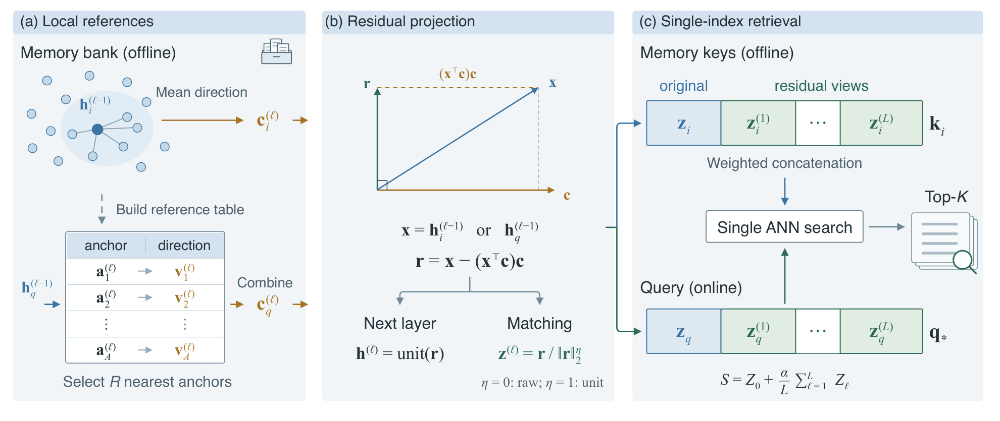
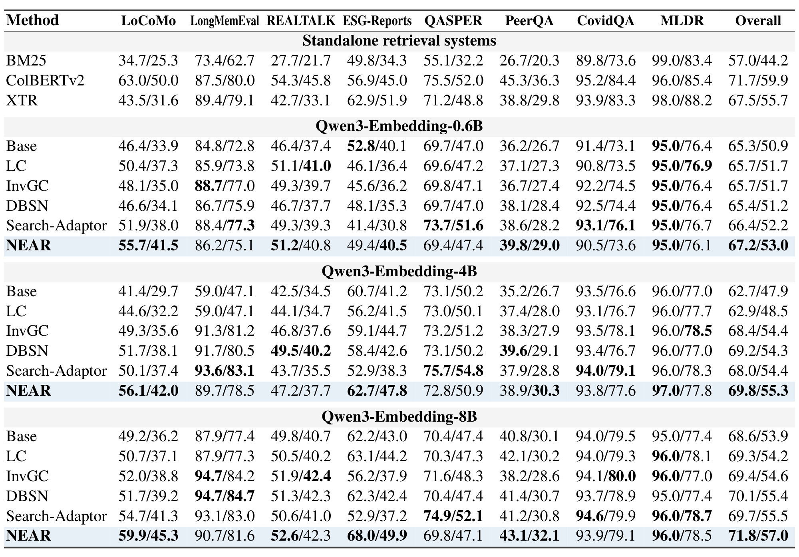
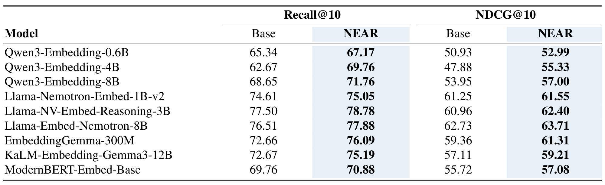
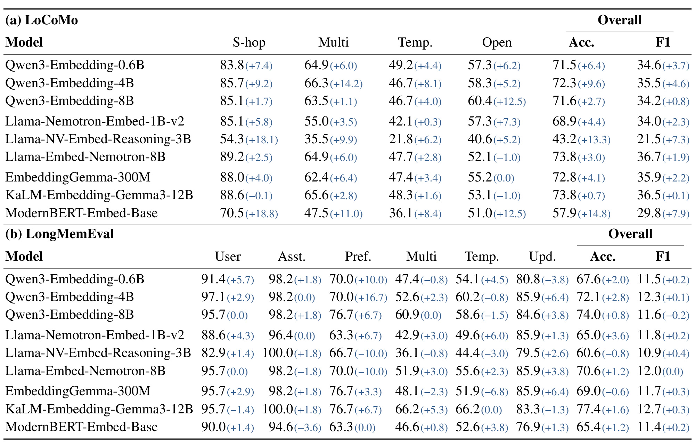
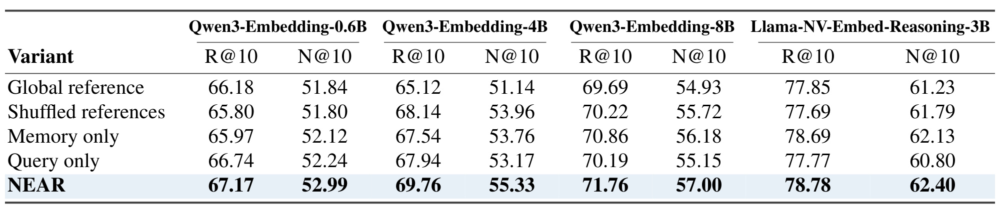
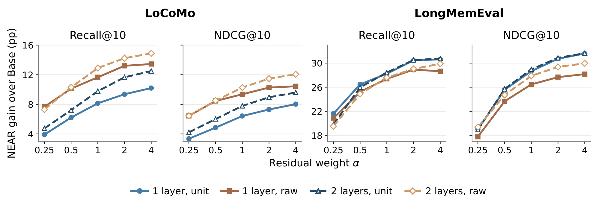
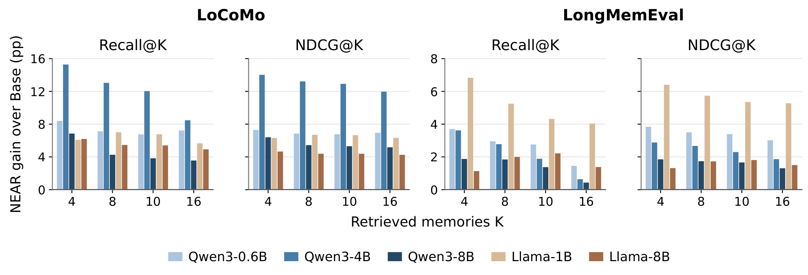
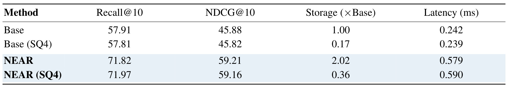

NEAR：用邻域参考残差找回长期记忆中的正确证据
论文 NEAR: Neighborhood-Aware Residuals for Memory Retrieval 由 Han Luo、Zhan Zhuang、Xu He、Jujia Zhao、Yu Li、Suqin Yuan、Dong Li、Lei Feng 合作完成，机构为东南大学、MemoraX AI、莱顿大学和悉尼大学。arXiv 首版公开于 2026 年 10 月 9 日；本笔记于 2026 年 10 月 14 日依据完整正文与附录核验。论文入口。本轮未核验到独立公开实现，以下数字均为作者报告，未执行训练或检索复现实验。
NEAR 保持文本编码器冻结，利用记忆库自身的近邻结构为向量构造新的匹配视图，再把原始相似度与残差相似度融合进一个固定索引。它适合讨论第一阶段证据检索的表示校准，并不涉及修改记忆内容或更新生成模型。
记忆检索需要从保存的记录中找到回答当前问题的证据，但不同事实细节的记录常常共享主题、实体或事件。这些共同内容会让没有所需证据的记录取得很高的相似度，并排在正确证据之前；只依赖查询与记忆的原始相似度，难以区分这种看起来相关、却不能回答问题的记录。
1. 背景和问题
1.1 长期记忆检索的任务边界
智能助手面对的历史信息通常比当前上下文长得多。用户的偏好、朋友的建议、一次活动的时间、工作上的承诺可能散落在不同轮次或不同文档中。将所有记录重新送给大模型成本较高，常用路线因而把记录先编码成向量并建立索引，再把当前问题单独编码，按向量相似度取前若干条作为回答证据。这个设计把离线记忆处理与在线查询分开，能够复用已经计算的记录表示。这里的记录是检索证据的基本单元，候选库的组织方式和标签沿用基准设定，不应随意改变后再与论文数字直接比较。NEAR 接受这条路线的总体结构，改动集中在固定记忆库内的匹配分数，而不是重新设计摘要、记忆写入、记忆更新、事实合并或答案生成。
这种任务的相关性比“话题相似”严格得多。问某人为什么选择一个品牌，需要找到解释其决策的建议；找出同一个人其他品牌合作的经历，虽然主题一致，却没有提供原因。询问一次偏好是否后来发生变化，还要区分不同时间的旧陈述与更新陈述。向量模型把语义上相近的文本放在相近方向，本来是检索的优点，但一组记录共享人物与话题时，共同信号可能掩盖决定答案的局部差异。论文把这些容易混淆的记录称为干扰项，所关注的是它们在原始相似度下压过真正证据的现象，并没有断言所有相似记录都是无用负例。
从工程链路看，编码器训练和线上召回是两个不同层面。更强的编码器可能使检索整体更好，却不保证在每个用户的具体记忆库中都能正确处理局部重复主题。监督式适配可以借助相关性标注学习映射，但需要标注与训练；上下文化编码则可能需要把其他记录带进编码过程，改变向量生成及更新成本。论文选择冻结预训练编码器，在已存在的向量上利用库内部关系做校准，因此称为免训练方法。这个称呼只说明没有梯度更新编码器或适配网络；其深度、残差归一化和融合权重仍通过开发集选择，不能理解为完全不需要验证数据或无需配置决策。
1.2 从相似话题到正确证据
原文 Figure 1 用 LoCoMo 的代言建议问题具体展示了干扰项怎样占据召回空间。查询问 Tim 给 John 选择代言提出过什么建议。原始检索的前十条覆盖了问候与近况、体育与营销、已有代言经历，其中记录提到相同人物及相近主题，因而容易与问题的表示相匹配。然而，包含“代言应与自己的价值观和品牌一致”这一建议的记录不在前十。图右侧把原本的相似记录作为局部参考信息，经过残差匹配后将正确证据置于第一，同时呈现其对话上下文。这里展示的是一个作者挑选的案例，不是全体问题的平均表现；实验节的主结果与消融负责判断这个机制是否具有更广泛的作用。案例仍有解释价值，因为它把“相关但不回答问题”与“提供答案依据”明确分开，也说明错误并非发生在语言生成阶段，而是在生成模型看到证据之前已经发生。
论文的观察是，相似记录不仅是竞争者，也透露了当前记忆周围的共同内容。如果邻居均围绕某些实体和话题，它们的平均方向就能作为这条记忆的局部参考。移除向量沿参考方向的分量后，剩余部分可能更突出该记录相对邻居的区别。这个过程没有逐字识别“品牌”“建议”等词，也没有使用查询答案来确定应该移除哪些事实；它是在连续向量空间进行几何操作。能否把事实差异凸显出来，依赖编码器的表示几何与邻域结构。将参考方向称为共同内容是方法的解释直觉，不能直接把一个向量投影等同于可验证的符号级语义分解。
一个重要困难在查询侧。记录的邻居可以预先从库里找出，但新问题到达时还没有候选记录。如果必须先检索一批候选才能为查询构造参考方向，那么方案会变成至少两阶段搜索，增加在线工作并使第二阶段受第一阶段遗漏影响。NEAR 因而建立小型查询参考表，用记忆表示形成的锚点路由新查询。锚点负责判断查询接近哪一片区域，锚点保存的方向则负责构造查询参考。这两个量不是同一个东西。表结构使查询在真正搜索记忆索引之前完成残差准备，最终仍只发起一次近似最近邻搜索。
对于推荐与检索研究，这篇论文的连接点是候选库局部几何与匹配校准。推荐召回同样会面对大量共享类别或属性的候选，但用户行为偏好、曝光偏差和点击目标与会话证据相关性并不相同。可以把邻域残差视作值得验证的召回表示思路，却不能把这里的问答证据增益直接当成点击率或排序收益。论文相关工作也讨论了用于生成式检索和推荐语义标识的投影残差量化，但 NEAR 的输出是用于内积搜索的连续表示，不是新的离散语义编号。这种区别决定了它接入索引的方式和评估目标。
对于大模型应用，它提供的价值是让检索器在固定预算内更容易送入正确事实，降低生成模型面对纯话题干扰的机会。它没有测量生成模型幻觉率，也没有保证只要正确证据进入上下文就一定被采用。固定十条证据的问答比较能验证检索改进是否传导到答案，但答案模型、排序恢复规则和评判器都属于传导链的一部分。理解论文时，应把“改进向量检索”“改进证据覆盖”“改进答案正确性”看作分别需要证据的三个命题，避免把第一项的提升直接替代后两项。
2. 方法
2.1 邻域记忆表示
NEAR 从冻结编码器产生的单位长度记忆向量开始。每一层都使用上一层状态计算近邻，排除记忆自身，最多选择五十条其他记录；邻居数量受实际库大小限制。模块输入是该层所有记忆状态，输出是每条记忆的局部参考、投影残差、用于打分的残差视图以及送入下一层的单位化状态。参考方向来自当前层的邻居，而不是全库只有一个共享均值。后续层在先前残差已经形成的空间中继续寻找邻域，因此不能把多层操作简化为对最初向量反复移除完全相同的方向。

Figure 2 左侧把离线记忆库处理与在线查询处理放在同一参考构造模块中，但两条路径的来源不同。记忆侧直接从邻居平均出参考方向，查询侧读取预先建立的锚点与方向表，再用查询状态选择最相似的少量锚点并合成方向。中间面板展示正交投影：原始状态沿参考方向的投影被减去，剩余残差同时进入两条分支。送到下一层的状态始终单位化，用于稳定后续余弦邻域；用于本层匹配的视图可以保留残差长度，也可以单位化。右侧把原始表示与多层残差视图拼接成记忆键和查询向量，以一次内积近邻搜索输出前若干记录。箭头的含义是表示在不同阶段流动，并没有可训练模块或反向传播损失。图中还保留原始视图，说明方法是增加一种差异匹配信号，而非彻底抛弃共同话题。它的实用性来自把复杂的多视图分数转换成静态键；代价是键维度随保留残差层数增加，以及需要在建库阶段维护邻域、参考表和尺度。图里的查询参考不随候选记忆逐对改变，所以不能把它描述为查询与每条候选共享完全相同的局部坐标系。
符号解释：$z_i$ 是记忆 $m_i$ 的冻结单位向量；$h_i^{(\ell-1)}$ 是第 $\ell$ 层输入状态；$\mathcal N_i^{(\ell)}$ 是排除自身后的余弦近邻集合，其大小为 $\min(k,N-1)$；$k=50$、$N$ 为库内记录数；$\operatorname{unit}(v)=v/\|v\|_2$ 用于非零向量；$c_i^{(\ell)}$ 为单位参考方向。平均与单位化从邻域提取共同方向，输入全部来自记忆库，不使用当前查询的相关性标签；若库过小或均值接近零，参考的稳定性需要实施时处理，原文非零归一化定义本身不构成异常情况的完整工程规范。
符号解释：$r_i^{(\ell)}$ 是记忆残差；上标 $\top$ 表示转置，括号内内积给出输入沿单位参考方向的投影长度。减去该投影后，残差与当前参考正交，这就是原文公式一的几何机制；它保留的是向量相对局部共同方向的差异，而非通过监督确定的答案信息。参考若包含真正需要的证据信号，投影也可能移除有用分量，因此后续融合保留原始相似度，实验中仍需检查逐任务负收益，不能单凭正交性证明所有查询的检索都变好。
符号解释：$h_i^{(\ell)}$ 用作下一层状态，$z_i^{(\ell)}$ 用作当前层匹配视图，$\eta$ 是开发集选定且查询记忆两侧共享的归一化开关。保留原始残差长度时，一条高度接近邻域方向的记录会产生短残差，其差异信号在内积中自然减弱；单位化会消除这层幅度信息，更突出方向匹配。二者没有普遍优劣，选择取决于数据集。递归状态始终单位化与匹配视图可以不归一化的区别，正是理解深度及权重实验的前提，不能将两条路径混写成所有残差都必然单位化。
2.2 预计算查询参考
记忆模块确定了局部方向后，每层使用球面聚类给输入记忆状态建立最多十六个锚点。锚点由输入状态聚类产生，保存方向则由该簇记忆各自的局部参考平均并单位化产生。线上查询只需要比较少量锚点，选出最多四项，用相似度的软最大权重混合对应方向。模块输入为上一层查询状态和该层固定参考表，输出为查询参考以及下一层状态、匹配视图。锚点承担路由，簇内平均参考承担投影，二者不能互换。该表的构造在离线完成，无须通过当前查询先找一批记忆候选，也没有为每个查询优化新的参数。
符号解释：$a_h^{(\ell)}$ 是该层第 $h$ 个球面聚类锚点，$C_h^{(\ell)}$ 是其所属记忆集合，$v_h^{(\ell)}$ 是簇内局部参考的平均单位方向。这个式子展开原文第三点二节的表项定义，聚类求解并非额外的监督训练目标。锚点来自待投影状态，方向来自每条记忆邻域，两者通常不同。簇内局部方向差异过大时，平均方向可能不代表其中某一条记忆，查询参考因此是一种压缩映射；原文提供最终效果与消融，没有给出它逼近逐查询精确邻域方向的误差保证。
符号解释：$H_q^{(\ell)}$ 是与查询最相似的 $R=\min(R_{\max},A)$ 个锚点下标集合；$A$ 为表项数量，$R_{\max}=4$；$\beta=10$ 为权重集中程度；$p_h^{(\ell)}(q)$ 为仅在选中锚点上归一化的权重；$c_q^{(\ell)}$ 是合成查询参考。较相似锚点影响更大，但所有被选中的方向都有机会贡献，权重来自查询状态与锚点的内积，并非查询与每条记忆的相关性。小表避免初次库搜索，同时也限制了参考细粒度；新增记忆或分布变化后，固定锚点是否仍能表示新的邻域需要另行验证。
符号解释：$z_q$ 是新问题的冻结单位向量，$r_q^{(\ell)}$、$h_q^{(\ell)}$、$z_q^{(\ell)}$ 分别是查询残差、递归状态及匹配视图；其余符号沿用记忆侧定义。查询和记忆遵循相同投影及归一化规则，但采用各自来源的参考方向。这样能形成可比较的多视图表示，而不要求 $c_q^{(\ell)}$ 与任意 $c_i^{(\ell)}$ 相等。原始编码器仍在线编码新问题，参考表只减少构造参考所需的搜索，因此表明“无需初步候选检索”不能写成“无需查询编码”或不计编码成本的端到端加速。
2.3 分数融合与单索引检索
原始向量与每层残差的分数幅度可能不同，尤其原始残差保留长度时，越深的层不一定仍处在相同数值范围。NEAR 用记忆库内积的标准差建立固定尺度，再把所有残差层的总权重控制在统一参数上。尺度不依赖线上查询或相关性标签；深度、归一化、总权重却由开发集的排序指标选定。正文保留原始信号可减少过度去除共同内容造成的风险，按层平均则使增加层数不会直接线性增加总残差权重。此模块接收全部原始和残差视图，输出静态记忆键与查询拼接向量；它没有梯度优化，建好固定库后键、尺度、参考表都可跨查询复用。
符号解释：$z_x^{(0)}=z_x$，$s_\ell(q,m_i)=(z_q^{(\ell)})^\top z_i^{(\ell)}$ 为第 $\ell$ 层内积；$\tau_\ell$ 为附录 C 的固定尺度，方差取总体方差且包括 $j=i$；下限 $10^{-6}$ 防止除零；$L$ 为残差层数，$\alpha\ge0$ 为总残差权重，$S$ 为原文公式三的融合分数。实现用表示协方差计算尺度而非构造全体两两分数矩阵。尺度校准处理数值大小，并不让不同层成为统计独立的证据；当某层方差很小或方向不稳定时，固定缩放仍需结合开发集效果判断。
符号解释：分号表示向量拼接，$k_i$ 是可离线构建的固定记忆键，$q_*$ 是查询完成查表与投影后生成的在线向量。两侧的平方根权重相乘恢复总权重，尺度置于查询侧后得到与融合打分精确相等的内积，这是原文公式四。精确等式指分数代数关系，HNSW 搜索依然是近似检索，并不保证准确返回全库真正的最高分记录。拼接维度为 $(L+1)d$，一次搜索因此仍可能比基础 $d$ 维索引更昂贵；部署还需要维持内积索引语义，不能随意整体单位化键和查询，否则分数排序可能改变。
3. 实验结果
3.1 数据、指标与开发集选择
作者使用 LMEB 发布的候选库和相关性标签，共八个任务、五千八百七十三条查询。会话类包括 LoCoMo、LongMemEval、REALTALK；文档类包括 ESG-Reports、QASPER、PeerQA、CovidQA、MLDR，覆盖金融报告、科研文章、生物医学与长文档。总体结果对八个任务等权平均，不是把全部查询混在一起计算一个微平均，因此小任务与大任务对 Overall 的贡献相同。指标沿用 LMEB 的 capped Recall@10 与 NDCG@10，前者看有限前十预算的证据覆盖，后者同时考虑相关结果在列表中的位置。不同数据集标签和候选设置不相同，不能只根据跨任务绝对数字推断哪种领域最容易。
Base 是原始单位向量的余弦检索。LC 校正局部亲和性，InvGC 变换表示，DBSN 规范化相似度，Search-Adaptor 在相关性监督下学习映射。它们与 NEAR 共享冻结向量、数据切分及开发选择设置。另有 BM25、ColBERTv2 和 XTR；后两种使用各自编码器与原生检索配置，提供独立系统对照，但不是同一骨干的纯后处理比较。Search-Adaptor 使用隐藏宽度二百五十六的残差网络、最多两千步优化，这意味着比较同时覆盖免训练校准与有监督适配，不能把所有基线统称为无训练方法。
NEAR 搜索一至三层、原始或单位残差、五个总权重值。七个任务采用分组五折评估，共享候选库或有重叠候选的查询分在同组，三次重复后取平均；MLDR 使用不相交 ConTEB 查询做开发。配置以开发集 NDCG@10 选取，保留到未见评估和 Top5 评估。附录中报告的标准差是重复切分的波动，不应解释为线上流量置信区间。索引采用 FAISS HNSW 内积搜索，连接数三十二、构建宽度二百、搜索宽度一百二十八、随机种子四十二。本文没有核验代码运行或独立统计显著性，接下来的“提升”均指表中均值差异。
3.2 同骨干与逐任务结果

Table 1 的每个单元格把召回与排序指标并排报告，右侧是等权任务平均。精确数值在附录中更充分：Qwen3-Embedding-4B 的平均召回从 62.67 到 69.76，提高七点零九个百分点；平均排序从 47.88 到 55.33，提高七点四五个百分点。Qwen 八十亿参数模型的平均召回 71.76，超过该指标最强同骨干基线 DBSN 的 70.08；平均排序 57.00，超过该指标最强基线 Search-Adaptor 的 55.50。这两项各对应自己的最强比较对象。结果支持 NEAR 能提升平均质量，但表中的逐任务格子揭示它没有全面统治其他方法。四十亿模型的 LongMemEval 召回 89.65、排序 78.50，虽大幅超过 Base 的 58.96 与 47.11，却低于 Search-Adaptor 的 93.57 与 83.06；不能只拿基础检索的大幅改进宣称该任务最优。
LoCoMo 是较明确的受益任务，四十亿模型召回从 41.39 到 56.15，增加十四点七六个百分点；排序从 29.69 到 42.04，增加十二点三四个百分点。相比之下，四十亿模型 QASPER 的召回从 73.11 降到 72.76，虽然排序略有提升；六亿模型 ESG-Reports 的召回也从 52.82 降到 49.41。共享信息可能帮助识别证据，也可能包含相关性所必需的特征，这些反例与保留原始视图的设计相呼应。八十亿模型在 LongMemEval 优于 ColBERTv2 和 XTR，两项平均仍没有超过 ColBERTv2 的全部任务水平；专用多向量系统的成本也没有在同一比较中完整配平。读表应把同骨干校准收益、独立系统绝对水平和不同任务的局部排序分开，尤其不可从 Overall 最优延伸成每个数据集、每个指标或每个资源预算都最优。
表中数字通常保留一位小数，正文使用附录的两位精确结果计算百分点，二者在四舍五入后相容。召回指标带有 capped 限定，应该沿用基准实现理解，而不是自行换成每个任务传统召回定义；若相关证据条数和前十预算的关系不同，分母处理会影响表格可比性。读者复现时还需要保持相同候选记录切分与输入长度设置，否则编码器本身不变，也可能得出不同的基础质量。
3.3 跨编码器收益

Table 2 扩展到九种冻结编码器，包含 Qwen 三种规模、三种 Llama 派生模型、EmbeddingGemma、KaLM 与 ModernBERT。所有编码器的八任务平均召回和排序都高于对应 Base，这是跨表示空间稳健性的主要证据。其中 EmbeddingGemma-300M 召回从 72.66 到 76.09，排序从 59.36 到 61.31；KaLM-Embedding-Gemma3-12B 从 72.67 到 75.19、从 57.11 到 59.21。小模型也能受益，说明机制并非只对大规模向量编码器有效；但不能据此说模型规模不重要，因为各模型的预训练数据、目标、向量维度和输入处理都不同。表中四十亿 Qwen 的增益最大，也和其 Base 在特定任务上偏弱有关，不宜把改进幅度直接作为编码器优劣排名。
更强的基础表示有时剩余收益较小。Llama-Nemotron-Embed-1B-v2 平均召回只从 74.61 到 75.05，排序从 61.25 到 61.55；Llama-Embed-Nemotron-8B 则从 76.51 到 77.88、从 62.73 到 63.71。说明 NEAR 的价值要结合现有召回水平与资源代价评估，无法保证每个系统都得到与四十亿 Qwen 一样的大幅增益。附录 Table A1 加入其他同骨干方法，NEAR 的平均排序领先不代表所有列的巨大差距，例如 KaLM 的 59.21 对 Search-Adaptor 的 58.80 只差零点四一个百分点。附录完整逐任务数据还表明平均正收益可以伴随局部下降。九编码器的覆盖比单模型证据更强，却仍限于相同八任务、固定库与作者选择流程，不是对任意向量模型或动态记忆系统的普遍保证；本笔记也没有将这些表中差异另行计算成显著性结论。
跨模型结果还有一个评估含义：每个模型都在自己的冻结向量上构造邻域，作者并未从一个模型学习校准参数再跨模型迁移。因此这张表证明算法形式可以在多种骨干上复用，不证明同一套索引、同一组锚点或完全相同的最优权重可直接跨模型搬运。编码器替换意味着库内表示、参考表、尺度和拼接键需要重新生成，这部分离线代价应在模型升级预算中考虑。表中参数量也是模型名称的一部分，不能把数值行间差异当成控制其他变量后的纯规模效应。
3.4 下游问答及不一致的传导

Table 3 把检索接入固定问答链路：Qwen3-30B-A3B 负责回答，GPT-4o-mini 负责判定正确性，两个方案都取十条记忆，恢复成时间顺序后送入相同提示。生成温度为零，最大输出一千零二十四个 token。LoCoMo 九种检索骨干的 Overall Accuracy 与词汇 F1 全部改善，四十亿 Qwen 准确率从 62.7 到 72.3，提高九点六个百分点，词汇 F1 从 30.9 到 35.5，提高四点六个百分点。其多跳准确率提高十四点二个百分点，比单跳的九点二更大，提示这套检索表示能够改善部分需要组合多个事实的证据集合。不过类别样本数和错误组成仍影响增益，不能把一个类别差值解释成已证明的多跳推理能力提升。
LongMemEval 的传导更有限：九种骨干中七种准确率改善，Llama-NV-Embed-Reasoning-3B 从 61.4 到 60.6，下降零点八个百分点；EmbeddingGemma 从 69.6 到 69.0，下降零点六个百分点。四十亿 Qwen 从 69.3 到 72.1，只提高二点八个百分点，远小于它在证据检索上三十余个百分点的改进。检索分数提升不会线性地变成答案正确率，可能受证据冗余、时间关系、答案模型使用方式或标签差异影响，论文未通过专项实验分解这些原因。八十亿 Qwen 准确率提高零点八而 F1 下降零点二，也说明语义正确与词汇重叠不同。LoCoMo 的 F1 使用类别相关评估，LongMemEval 的 F1 对可回答问题采用归一化及词干化词重叠，两个任务的绝对 F1 不宜直接比较。自动评判器给出了统一对照，仍没有独立人工标注一致性或更换评判模型的证据，因此结论应是固定链路下观察到问答改善及少量退化，而不是检索改进必然保证答案可靠。
恢复时间顺序还改变了生成模型实际看到的呈现方式：向量检索的名次用于决定哪些记录进入集合，进入后并不是继续按检索高低展示。因此较高的排序分数主要通过截断成员选择影响回答，不等同于在生成提示中把最高分证据放得更靠前。这个条件对解释检索与问答增益不一致有实际意义，也应该在独立复现时保留。
3.5 邻域机制消融

Table 4 在三个 Qwen 规模与 Llama 三十亿模型上做控制，所有变体沿用完整 NEAR 的深度、归一化及权重，不另行重调，而且仍保留原始匹配。把每条记忆的局部参考换成全库均值后，四模型两指标均下降，完整方法平均比全局参考多二点一六个召回百分点与二点一五个排序百分点；这支持局部结构的作用，说明单一公共方向不足以解释全部收益。保留局部方向却打乱它们与记忆的对应关系，召回平均下降一点四零、排序下降一点一二。由此可见，不只是多加几个方向即可，方向与具体记忆的对应关系同样有意义。打乱结果平均于三次固定排列，不能误称为重新训练三次模型或随机改变查询文本。
只处理记忆侧时，完整方法平均多一点一零个召回百分点和零点八八个排序百分点；只处理查询侧时分别多一点二一和一点五九。这里验证的是两侧残差协同的增益，并不是说两侧必须使用同一参考方向。四十亿 Qwen 的完整召回 69.76 对全局参考 65.12，差距明显；Llama 三十亿的完整 78.78 对记忆侧单独 78.69，则差距很小。变体沿用为完整方法挑选的参数，因此是局部机制控制，并非各变体各自达到最佳配置后的最终竞赛；它能支持移除组件会损失效果，却不能完全排除重调后变体缩小差距。论文案例也报告正确证据从第七十五位到第一位，第一层残差已经压过基础前十干扰项；干扰项的原始分数在投影后下降更多，符合共同内容造成排序优势的解释。但单个成功案例不能证明对所有干扰项都具有相同的分数变化，也没有展示一组失败案例分布。
3.6 权重与深度敏感性

Figure 3 固定四十亿 Qwen，在 LoCoMo 与 LongMemEval 的完整查询集合上变化总残差权重，比较一层和两层、原始和单位残差。横轴从零点二五到四，纵轴是相对 Base 的百分点增益，各任务纵轴范围不同。展示的所有组合在两个任务两项指标上保持正增益，因此效果不是只依赖一个极窄参数点。但“测试范围内正收益”与“任意配置都不会退化”不同，图没有覆盖所有任务、第三层或无限增大权重。总体上权重增大后收益提高并趋于平缓，LoCoMo 更偏好保留长度的原始残差，LongMemEval 在中高权重下单位残差的排序增益更强。这直接解释为什么归一化开关需要开发选择，而不能为了实现方便固定为统一方案。
不同层数保持相同总权重，是读这张图的前提。否则两层比一层好可能仅因为总残差信号权重翻倍。这里用按层平均约束消除了这种最直接的混淆，但层数仍改变邻域结构、向量维度、参考表数量及建库成本。两层原始残差在 LoCoMo 通常较强，并不证明每层都一定捕捉独立事实成分；LongMemEval 的曲线也不是统一越深越好。图支持若干参数组合的稳健性，尚未分别研究邻居宽度五十、锚点十六、路由四项、逆温度十的广泛敏感性。对复现而言，应区分作者固定参数与通过开发集选择的参数，把额外的调参预算计算进去；对部署而言，较高的残差权重还意味着更加依赖库内几何，一旦新记忆改变邻域分布，原先选择未必仍然合适。
参数选择与敏感性展示使用的数据角色也不同：正式均值来自对齐的开发选择和未见评估，图三则使用两个任务完整查询集合观察曲线。后者适合解释性能形态，不应倒过来依据完整评估曲线挑一个最好参数，再声称那是未见数据上的开发配置。
3.7 检索预算

Figure 4 在两个会话任务上比较五个检索模型，预算分别为四、八、十、十六，其他检索配置不变。所有显示的柱子均为正，表明增益不局限于主结果的前十截断。LoCoMo 中四十亿 Qwen 在更小预算下的召回差距尤其明显，随着预算扩大差距缩小，可以理解为原始检索多返回一些记录后也有机会覆盖原先排得较后的证据。这只是图形趋势的解释，作者没有在这里提供因果分解；不同模型的基础召回和同一预算内的证据构成都不同。LongMemEval 的五模型同样保持增益，但纵轴只有约零到八个百分点，不能与左侧零到十六的高度直接比较。
预算实验测的是证据检索，不能把柱高当作问答准确率增益。增加返回记录可能提高覆盖，也可能给答案模型带来更多不必要文本，论文只在固定十条时做表三的问答对照，未展示四档预算下完整的回答质量、输入 token 及生成成本曲线。附录 Table A5 将开发集为前十选择的配置直接用于前五：四十亿 Qwen 平均召回从 52.18 到 60.01，平均排序从 44.03 到 51.73，这支持配置跨截断复用；但 KaLM 的前五排序 55.46 略低于 Search-Adaptor 的 55.49，再次提醒“平均好于 Base”不等于每个同骨干对照均最优。本文因此保留预算图而不重复粘贴整张附录前五表，把证据放在它实际支持的范围之内。
3.8 存储、查询与离线建库成本

Table 5 汇总 Qwen 六亿及四十亿模型在两个会话任务上的质量与四个代表性库的资源测量。未压缩 NEAR 平均召回 71.82、排序 59.21，相比 Base 的 57.91 与 45.88 更高；这是四种会话设置的平均，和八任务表二 69.76 等数值的口径不同。FP32 总存储相对基础索引中位比值为二点零二，查询中位时延从零点二四二毫秒到零点五七九毫秒，增加零点三三七毫秒，约为二点三九倍。论文明确以更多检索计算换质量，未压缩方案没有降低查询时延。时延包括向量准备及近邻搜索，不包括编码新问题，也不包括生成答案或评判，不能把亚毫秒数字当成完整助手响应时间。
四位标量量化之后，NEAR 相对 FP32 Base 的总资产比例约零点三六，基础索引自己量化后约零点一七。只比较量化 NEAR 与未量化 Base 会把压缩的公平性掩盖掉：与量化 Base 对照，NEAR 仍较大。作者报告 NEAR 量化后的总资产减少中位比例八十二点七%，质量从 71.82/59.21 到 71.97/59.16，变化很小；这些是有限设置的观测，召回略增并不代表量化必然提升质量。量化 NEAR 时延零点五九零毫秒，基本保持原先水平，收益主要在容量，不能宣传为同时减少存储并加速检索。总存储包括索引和查询侧参考状态；不同模型不同层数导致扩维程度不同，汇总比值不能替代具体系统的容量预算。
附录 G 揭示了测量尺度：代表性 LoCoMo 库六百二十九条记录、八条计时查询，LongMemEval 库四百七十六条、一条计时查询，单 CPU 核执行。离线建库从已缓存向量开始，五次运行取中位，FP32 NEAR 需要零点一二九至一点一四七秒，Base 需要零点零四零至零点一四零秒；量化 NEAR 包含量化器训练，需要零点二四四至一点九八八秒。这些数字没有包含全量编码、持续写入、故障恢复或服务并发。四十亿模型 LoCoMo 的分项尤其重要：FP32 NEAR 总资产二十五点六七六 MiB、时延一点八一七毫秒，Base 六点三零七 MiB、零点三九六毫秒；量化 NEAR 四点二五八 MiB、一点五六九毫秒。成本不是一个统一的小常数，不能用汇总中位概括所有库。论文未来工作包括频繁更新的记忆库，当前固定索引结果也没有证明百万或亿级推荐候选库的扩展性。
4. 总结
4.1 可复用的研究判断
NEAR 的主要贡献是把记忆局部邻域引入第一阶段匹配：离线为每条记录构造参考并投影，建立可直接路由查询的紧凑表，再以原始和多层残差的融合内积进行一次近邻搜索。这个组合同时回答了两个问题：怎样减少共享主题对事实差异的遮蔽，怎样在没有初步候选检索的前提下为新查询取得参考。其公式不是新的编码器训练损失，而是一套固定库中的表示及分数变换。保存原始表示、控制总残差权重与尺度，以及记忆键静态化，形成了可接入现有向量索引的完整路径。
证据强度较好的部分是八任务九编码器的平均检索改善、局部性和对应关系消融，以及固定答案模型下 LoCoMo 九骨干的问答改善。与之相伴的边界同样清楚：逐任务并非全部提高，LongMemEval 两骨干准确率下降，四十亿模型的很大证据检索收益也只带来较小的问答收益。参数图与预算图说明部分变化范围内结果稳定，却未覆盖所有固定参数与动态库变化。工程成本方面，它以维度和计算换质量，量化明显降低存储，但仍大于量化 Base，也没有让查询时延低于基础索引。
对推荐算法的可迁移启发，是在相同候选集合上验证“原始匹配加局部差异匹配”是否可以区分大量共享属性的候选。实验应保留原召回、比较真实业务目标、配平索引存储与延迟，还应检查不同兴趣群体是否被过度去除共同偏好。以上属于个人提出的验证方向，论文没有给出推荐点击、转化或在线实验结果。对大模型记忆而言，更直接的应用是固定用户记忆库的检索增强；仍应将答案质量、时间事实一致性与证据可追溯性分别测试，不能用一个检索指标替代整个助手的可靠性。
4.2 局限与后续跟进
第一项局限是固定库假设。新记录可能改变近邻、聚类参考和尺度，索引键是否局部更新即可保持效果未被验证；作者也把频繁更新列为未来工作。后续可以记录不同增量比例下的建库开销、参考漂移和检索质量，比较定期全量重建与部分更新。第二项局限是当前资源证据规模：几百记录、极少计时查询、单核缓存向量测量不能支持大型并发服务结论。后续应增加候选库规模与查询覆盖，测量尾延迟、编码时间、内存峰值、构建成本及量化索引的搜索损失，并始终与同样量化的 Base 对照。
第三项局限是免训练不等于无选择偏差或下游保证。深度、归一化与权重由开发排序指标挑选，答案采用固定生成及自动评判链路，少量负向结果尚缺细致错误分析。后续应先复现分组切分，隔离训练选择与评估证据，再检查共实体干扰、时间更新、多跳组合等子集的成败；问答评估加入人工复核及不同答案模型，确认收益是否依赖某一上下文使用方式。本轮未核验独立实现，因此复现入口、异常零向量处理及索引更新实现仍是待补证据，不宜写成已就绪的工程产品。
最值得继续读的是参考表为何能够近似查询需要的局部方向，以及何种表示空间会在去除共同方向后损失真正证据。消融支持局部性，但没有给出查询参考压缩误差与检索收益之间的定量关系；个别模型收益很小，也值得用邻域集中度、残差范数分布和原始相关性强弱解释。若后续工作能够把这些诊断与配置选择联系起来，才更可能在不同用户记忆库之间稳健复用，减少逐库调参。当前结论应保持在作者实验所证明的范围：NEAR 是有完整检索机制与多模型证据的局部表示校准方案，其容量、时延、动态更新和问答退化仍需具体场景验证。